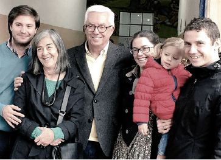
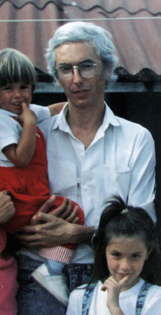
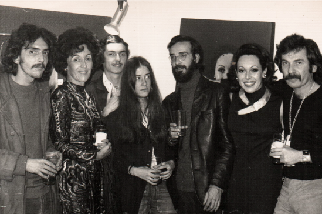
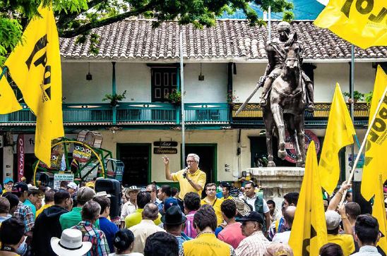
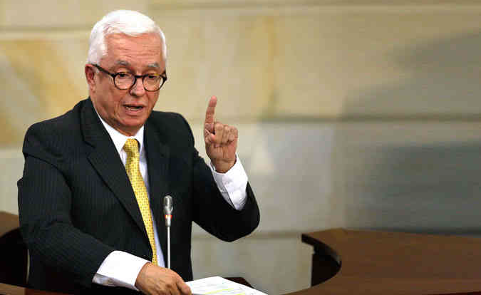
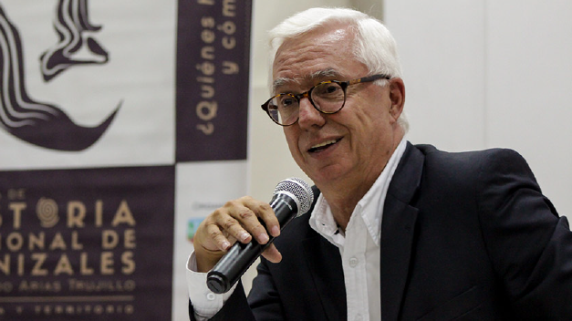

Hombre de familia
Felizmente casado hace cuarenta y dos años con su novia de la universidad, Carmen Escobar. Tienen dos hijos, Natalia y Julián. Nunca pierde oportunidad para compartir en familia y jugar con su nieta Alicia.
Su Juventud
Nació en Ibagué el 11 de febrero de 1950. En 1968 ingresó a la Universidad de los Andes y antes de graduarse de arquitecto decidió dedicar su vida a transformar a Colombia. Se vinculó al proyecto de voluntariado pies descalzos, actividad que consistía en ayudar a la gente en las regiones a encontrar el camino para resolver sus problemas.


El Dirigente social
En Manizales, alternó su vocación de profesor de arquitectura con la de dirigente social.
Cofundador y dirigente de Unidad Cafetera y Salvación Agropecuaria, ambas organizaciones de productores agropecuarios que se defendían de las importaciones. En 1995, ayudó a la condonación de las deudas bancarias de más de cien mil familias cafeteras..
El Profesor
Durante 26 años fue profesor de tiempo completo de la Universidad Nacional de Colombia, Sede Manizales. Institución que le concedió las distinciones Medalla al Mérito, Maestro Universitario y Orden Gerardo Molina. Ha publicado 15 libros sobre historia, arquitectura, vivienda, economía, agricultura, política y Tratados de Libre Comercio. Reconocido columnista de La Patria, donde ha publicado más de 1.300 artículos. En 1997 ganó la XVII Bienal Colombiana de Arquitectura en la categoría Teoría, Historia y Crítica.


El Senador
Llegó al Senado en 2002, desde entonces ha realizado más de 150 debates de control político. Con su labor parlamentaria, ha ayudado a comprender y solucionar los temas de la política nacional, convirtiéndose en el congresista que más debates ha realizado en la historia del Congreso.
“Vivo con sueldo de profesor y el resto lo dono a las causas que considero justas”
El Candidato
Candidato a la Presidencia de la República por el Polo. Su proyecto es de convergencia nacional, donde se unan todos los colombianos sin distingos políticos ni sociales, que quieran superar la desigualdad y la grave crisis nacional.
